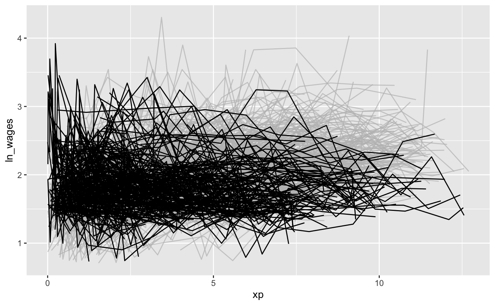
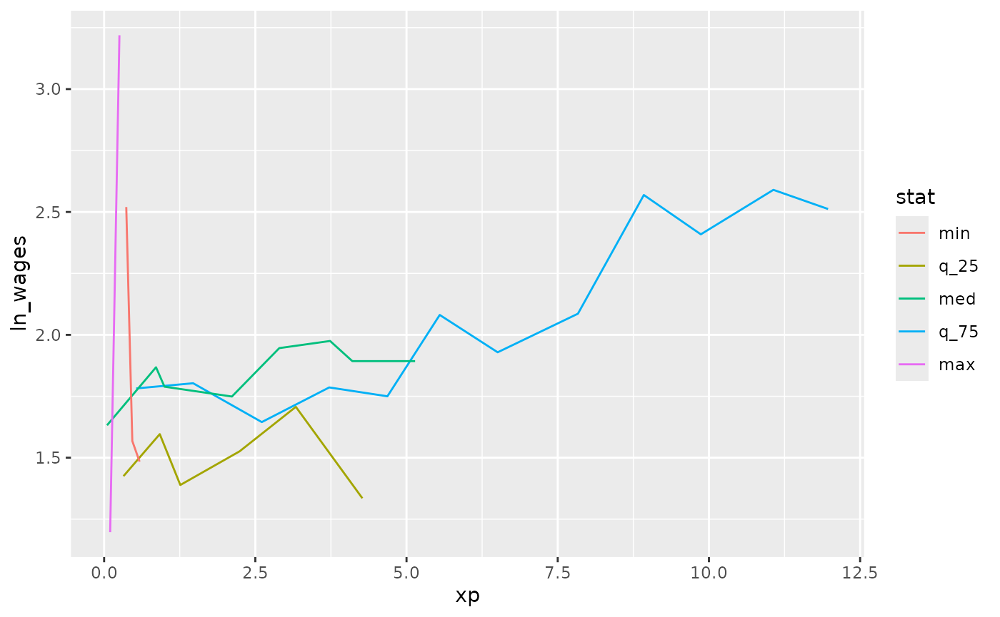

It can be useful to fit a model to explore your data. One technique is to fit a linear model for each group in a dataset. For example, you could fit a linear model for each key in the data.
brolgar provides a helper function to help with this,
called key_slope().
key_slope() returns the intercept and slope estimate for
each key, given a linear model formula. We can get the number of
observations, and slope information for each individual to identify
those that are decreasing over time.
key_slope(wages,ln_wages ~ xp)
#> # A tibble: 888 × 3
#> id .intercept .slope_xp
#> <int> <dbl> <dbl>
#> 1 31 1.41 0.101
#> 2 36 2.04 0.0588
#> 3 53 2.29 -0.358
#> 4 122 1.93 0.0374
#> 5 134 2.03 0.0831
#> 6 145 1.59 0.0469
#> 7 155 1.66 0.0867
#> 8 173 1.61 0.100
#> 9 206 1.73 0.180
#> 10 207 1.62 0.0884
#> # ℹ 878 more rowsWe can then join these summaries back to the data:
library(dplyr)
wages_slope <- key_slope(wages,ln_wages ~ xp) %>%
left_join(wages, by = "id")
wages_slope
#> # A tibble: 6,402 × 11
#> id .intercept .slope_xp ln_wages xp ged xp_since_ged black hispanic
#> <int> <dbl> <dbl> <dbl> <dbl> <int> <dbl> <int> <int>
#> 1 31 1.41 0.101 1.49 0.015 1 0.015 0 1
#> 2 31 1.41 0.101 1.43 0.715 1 0.715 0 1
#> 3 31 1.41 0.101 1.47 1.73 1 1.73 0 1
#> 4 31 1.41 0.101 1.75 2.77 1 2.77 0 1
#> 5 31 1.41 0.101 1.93 3.93 1 3.93 0 1
#> 6 31 1.41 0.101 1.71 4.95 1 4.95 0 1
#> 7 31 1.41 0.101 2.09 5.96 1 5.96 0 1
#> 8 31 1.41 0.101 2.13 6.98 1 6.98 0 1
#> 9 36 2.04 0.0588 1.98 0.315 1 0.315 0 0
#> 10 36 2.04 0.0588 1.80 0.983 1 0.983 0 0
#> # ℹ 6,392 more rows
#> # ℹ 2 more variables: high_grade <int>, unemploy_rate <dbl>And highlight those individuals with a negative slope using
gghighlight:
library(gghighlight)
wages_slope %>%
as_tibble() %>% # workaround for gghighlight + tsibble
ggplot(aes(x = xp,
y = ln_wages,
group = id)) +
geom_line() +
gghighlight(.slope_xp < 0)
Find keys near other summaries with keys_near()
We might want to further summarise our exploratory modelling by finding those slopes that are near a five number summary values:
summary(wages_slope$.slope_xp)
#> Min. 1st Qu. Median Mean 3rd Qu. Max. NA's
#> -4.57692 -0.00189 0.04519 0.04490 0.08458 13.21569 38Finding those groups that are near these values can be surprisingly challenging!
brolgar makes it easier by providing the
keys_near() function. You tell it what the key is, what
variable you want to summarise by, and then by default it returns those
keys near the five number summary. Let’s return the keys near the
.slope_xp:
wages_slope %>%
keys_near(key = id,
var = .slope_xp)
#> # A tibble: 31 × 5
#> id .slope_xp stat stat_value stat_diff
#> <int> <dbl> <fct> <dbl> <dbl>
#> 1 2092 -0.00189 q_25 -0.00189 0
#> 2 2092 -0.00189 q_25 -0.00189 0
#> 3 2092 -0.00189 q_25 -0.00189 0
#> 4 2092 -0.00189 q_25 -0.00189 0
#> 5 2092 -0.00189 q_25 -0.00189 0
#> 6 2092 -0.00189 q_25 -0.00189 0
#> 7 6770 0.0846 q_75 0.0846 0
#> 8 6770 0.0846 q_75 0.0846 0
#> 9 6770 0.0846 q_75 0.0846 0
#> 10 6770 0.0846 q_75 0.0846 0
#> # ℹ 21 more rowsHere it returns the id, the .slope_xp, and
the statistic that it was closest to, and what the difference between
the slope_xp and the statistic.
You can visualise these summary keys by joining them back to the data:
wages_slope %>%
keys_near(key = id,
var = .slope_xp) %>%
left_join(wages, by = "id") %>%
ggplot(aes(x = xp,
y = ln_wages,
group = id,
colour = stat)) +
geom_line()
You can read more about keys_near() in the Identifying
interesting observations vignette.